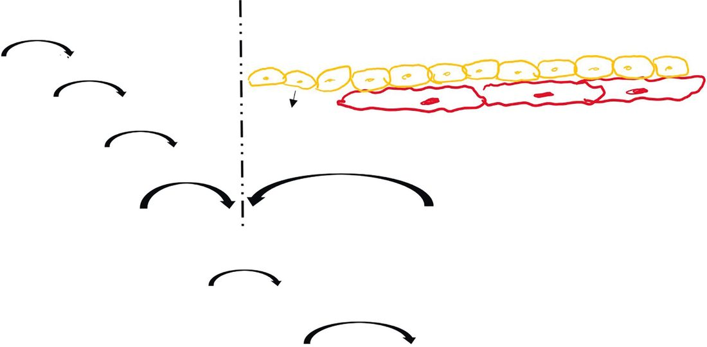

Transfusion and Coagulopathy
Summary
- Surgical bleeding is far more often a mechanical problem than a haematological one: incomplete haemostasis is the most common cause of bleeding after an operation [1].
- The value of understanding the clotting cascade is therefore not that it explains most bleeding, but that it tells you which of the small number of patients who really do have a coagulopathy needs which product.
- This page covers normal haemostasis, the congenital and acquired bleeding disorders a surgeon meets, the tests used to characterise them, blood components and their indications, and the complications of transfusion, from the febrile reaction that is common and benign to the acute haemolytic reaction that can kill.
- The best single predictor of bleeding risk is not a coagulation screen but the history and examination [1].
Definition
Coagulopathy here means an impairment of clot formation or clot stability sufficient to cause or perpetuate bleeding. It may be inherited, acquired through drugs, organ failure or consumption, or produced by the resuscitation itself.
Massive transfusion is defined by the Oxford Handbook as replacement of the patient's whole circulating volume within 24 hours [2]. Bailey & Love separates the complications of blood transfusion into those arising from a single transfusion and those related to massive transfusion, which is a useful way to hold them in mind [3].
A type and crossmatch determines ABO compatibility; a type and screen determines ABO compatibility and additionally looks for preformed antibodies to minor antigens [4].
Pathophysiology
Three things happen at once when a vessel is injured: vasoconstriction, platelet adhesion, and thrombin generation [5].
- Platelet adhesion depends on von Willebrand factor, which links the GpIb receptor on the platelet to exposed collagen [1].
- Platelets then bind to each other through GpIIb/IIIa, which fibrin links together to form the platelet plug [5].
- Thromboxane A2, released from platelets, drives this: it increases platelet aggregation, promotes vasoconstriction, and triggers calcium release within the platelet, which exposes the GpIIb/IIIa receptor [5].
- Prostacyclin from endothelium does the opposite, it decreases platelet aggregation and promotes vasodilatation, raising platelet cAMP [5].
- The two pathways converge on factor X.
- The intrinsic pathway begins with exposed collagen, prekallikrein, high molecular weight kininogen and factor XII, which activates XI, then IX with VIII, then X with V [5].
- The extrinsic pathway is shorter: tissue factor from injured cells with factor VII activates X directly [5].
- From that convergence both routes convert prothrombin to thrombin and thrombin converts fibrinogen to fibrin; factor XIII then crosslinks the fibrin [5].
Thrombin is the key to coagulation, it converts fibrinogen to fibrin and fibrin split products, activates factors V and VIII, and activates platelets [5].
- Several facts about individual factors matter clinically.
- Factor VII has the shortest half-life [5].
- Factors V and VIII are the labile factors: their activity is lost in stored blood but retained in fresh frozen plasma [5].
- Factor VIII is the only factor not synthesised in the liver, it is made in endothelium along with von Willebrand factor [5].
- The vitamin K–dependent factors are II, VII, IX and X, together with proteins C and S [5].
Natural anticoagulation is dominated by antithrombin III, which binds and inhibits thrombin and inhibits factors IX, X and XI; heparin works by activating it, up to a thousandfold [6]. Protein C, vitamin K–dependent, degrades factors V and VIII and fibrinogen; protein S is its vitamin K–dependent cofactor [6].
Fibrinolysis runs on tissue plasminogen activator released from endothelium, which converts plasminogen to plasmin; plasmin degrades factors V and VIII, fibrinogen and fibrin, so the platelet plug is lost [6]. Alpha-2 antiplasmin is the natural inhibitor of plasmin, also released from endothelium [6].
- Dilutional coagulopathy is the mechanism that matters most in a bleeding surgical patient.
- Dilutional thrombocytopenia and dilution of coagulation factors occur with massive transfusion, and preventing this is central to damage control resuscitation [3][7].
- Two other resuscitation-induced problems compound it: cold products or a cold patient slow the enzyme reactions, so the patient must be warm to clot properly, and the citrate in stored blood binds calcium after transfusion and causes hypocalcaemia, which impairs clotting and can itself cause hypotension [7].

Clinical features
- The pattern of bleeding points to the compartment at fault. Platelet disorders cause bruising, epistaxis, petechiae and purpura [1].
- Epistaxis is common with von Willebrand factor deficiency and platelet disorders, and menorrhagia is common with bleeding disorders generally [1].
- The most common symptom of von Willebrand's disease is epistaxis; of haemophilia A, haemarthrosis [1].
Two points from the history are worth asking for by name. Abnormal bleeding with tooth extraction or tonsillectomy picks up 99% of patients with a bleeding disorder [1]. A normal circumcision does not exclude one, because the newborn may still have clotting factors from the mother, factor VIII crosses the placenta, so babies with haemophilia A may not bleed at circumcision [1].
In the anaesthetised patient the usual symptoms are unavailable, and a transfusion reaction may present as diffuse bleeding in the field [9].
Etiology
Congenital bleeding disorders
- Von Willebrand's disease is the most common congenital bleeding disorder [1].
- Types I and II are autosomal dominant, type III autosomal recessive [1].
- Type I, a reduced quantity of von Willebrand factor, accounts for 70% of cases and is often only mildly symptomatic; type II is a defect in the molecule itself; type III is complete deficiency, rare, and causes the most severe bleeding [1].
- The prothrombin time is normal and the PTT may be normal or abnormal, with a long bleeding time and an abnormal ristocetin test [1].
Haemophilia A is factor VIII deficiency, sex-linked recessive, with a prolonged PTT and normal PT [1]. Haemophilia B, Christmas disease, is factor IX deficiency, also sex-linked recessive, with the same laboratory pattern [1]. Factor VII deficiency is the mirror image: prolonged PT with a normal PTT, and a bleeding tendency [1].
Two named platelet receptor defects are worth separating, because their names are easily transposed. Glanzmann's is deficiency of the GpIIb/IIIa receptor, so platelets cannot bind to each other; Bernard-Soulier is deficiency of GpIb, so platelets cannot bind to collagen [1].
Acquired bleeding disorders
Uraemia inhibits platelet function, mainly by inhibiting the release of von Willebrand factor, and becomes relevant as the blood urea rises above roughly 60 to 80 [1].
Heparin-induced thrombocytopenia is caused by an IgG antibody to the heparin-platelet factor 4 complex, which destroys platelets but can also aggregate them and cause thrombosis, in which case it is HITT [1]. The clinical signs are a platelet count under 100, a fall of more than 50% from admission levels, or thrombosis while on heparin; it can occur with low doses, and it forms a white clot [1].
Disseminated intravascular coagulation shows decreased platelets, low fibrinogen, high fibrin split products with a high D-dimer, and prolongation of both PT and PTT; it is often initiated by tissue factor [1].
Drugs account for much of the rest. Aspirin inhibits cyclo-oxygenase in platelets and reduces thromboxane A2, and because platelets have no DNA they cannot resynthesise the enzyme, the effect lasts the life of the platelet [1]. Clopidogrel is an ADP receptor antagonist [1]. Acquired thrombocytopenia can also follow H2 blockers and heparin [1].
Hypercoagulable states
These present as venous or arterial thrombosis or embolism [10]. Factor V Leiden is the most common congenital hypercoagulability disorder, accounting for 30% of spontaneous venous thromboses; the defect is on factor V and causes resistance to activated protein C [10].
Antithrombin III deficiency deserves separate mention because heparin does not work in these patients, and the deficiency can develop after previous heparin exposure [10]. Treatment is recombinant AT-III concentrate or fresh frozen plasma, which has the highest concentration of AT-III, followed by heparin and then warfarin [10].
Antiphospholipid antibody syndrome is procoagulant despite a prolonged PTT, which is the trap [10]. It is caused by antibodies to phospholipids including cardiolipin and lupus anticoagulant; not all patients have lupus [10]. Diagnosis rests on a prolonged PTT not corrected with FFP, a positive Russell viper venom time, and a false-positive RPR test for syphilis [10].
Tobacco is the most common factor causing acquired hypercoagulability; the other acquired causes are malignancy, inflammatory states including inflammatory bowel disease, infection, oral contraceptives, pregnancy, rheumatoid arthritis, the postoperative state and myeloproliferative disorders [10].
Two iatrogenic states complete the list. Cardiopulmonary bypass activates factor XII and produces a consumptive coagulopathy, prevented with heparin [10]. Warfarin-induced skin necrosis occurs when a patient is started on warfarin without being heparinised first: proteins C and S have short half-lives and fall before the procoagulant factors, producing a transient hyperthrombotic state, and patients with relative protein C deficiency are especially susceptible [10].
Virchow's triad (stasis, endothelial injury and hypercoagulability) remains the framework for venous thrombosis; for arterial thrombosis the key element is endothelial injury alone [10].
Diagnosis
PT and INR test the extrinsic pathway, measuring factors II, V, VII and X and fibrinogen; the PT is also the best single measure of liver synthetic function, and it is the test used to monitor warfarin, with a target INR of 2 to 3 for routine anticoagulation [11].
PTT tests the intrinsic pathway, measuring most factors except VII and XIII (so it does not pick up factor VII deficiency) as well as fibrinogen, and it is the test used to monitor heparin, with a target of 60 to 90 seconds for routine anticoagulation [11].
Activated clotting time is used intraoperatively: 150 to 200 seconds for routine anticoagulation, and above 400 seconds for cardiopulmonary bypass [11]. Bleeding time tests platelet function [11].
Thromboelastography reads as a set of abnormalities each with its own product. A raised R, the reaction time, calls for FFP; a raised K time or a low angle calls for cryoprecipitate; a low maximum amplitude calls for platelets or DDAVP; and a high LY30, the lysis at 30 minutes, calls for an antifibrinolytic, aminocaproic or tranexamic acid [11].
- Blood grouping and crossmatching have different timings, and knowing them determines what you can ask for in an emergency.
- Grouping (adding A, B and RhD agglutinins to donated blood) takes under 5 minutes; crossmatching, mixing donated blood with recipient serum, takes about 20 minutes [2].
- Bailey & Love gives longer laboratory figures: full crossmatching may take up to 45 minutes, type-specific blood matched only for ABO and rhesus can be issued within 10 to 15 minutes, and where blood must be given immediately group O is used [3].
For an acute haemolytic reaction the confirmatory findings are a haptoglobin below 50 mg/dL, free haemoglobin above 5 g/dL, and a rise in unconjugated bilirubin [9].
Thresholds and severity
Platelets: aim for a count above 50,000 before surgery and above 20,000 afterwards [1].
INR: above 1.5 is a relative contraindication to performing a surgical procedure; above 1.3 is a relative contraindication to central line placement, percutaneous needle biopsy and eye surgery [11].
Expected response to a unit: one unit of packed red cells should raise the haemoglobin by 1 g/dL, and the haematocrit by 3 to 5 points; one six-pack of platelets should raise the platelet count by 50,000 [4].
Timing of reversal agents: intravenous vitamin K takes 12 hours to start working and 24 hours for full effect; FFP acts immediately on infusion, though it takes 2 hours to thaw and complete the infusion; prothrombin complex concentrate also acts immediately, and the infusion itself takes 30 minutes [5].
Half-lives worth remembering: red cells 120 days, platelets 7 days, polymorphs 1 to 2 days [5].
- UK practice uses a restrictive transfusion threshold, and the exceptions to it are the part that gets forgotten.
- NICE guidelines recommend that for the majority of patients the transfusion threshold for postoperative anaemia should be restrictive, defined as below 7 g/dL, with a target haemoglobin of 7 to 9 g/dL after transfusion [2].
- Three groups are excepted: massive haemorrhage, acute coronary syndrome, where the target is 8 to 10 g/dL, and chronic anaemia requiring regular transfusion [2].
- Postoperative monitoring is expected to be structured rather than ad hoc.
- Checking every patient's postoperative haemoglobin in recovery or on return to the ward is described as good practice, with a formal full blood count usually the following day [2].
- Where there has been moderate to large intraoperative blood loss, or postoperative bleeding is expected from a known coagulopathy or for surgical reasons, the patient should be monitored in a setting judged appropriate by a senior clinician, and use of the National Early Warning Score to detect deterioration early is described as critical [2].
- Any patient with ongoing postoperative blood loss must be assessed regularly and expeditiously, the senior surgeon must be informed, and critical care outreach teams are named as a source of help [2].
The bedside check is the single most effective safety step, because ABO incompatibility from clerical, bedside, sampling or laboratory error is the commonest cause of acute haemolytic reaction [2]. Two healthcare personnel should check the patient's details against the prescription and against the label of the donor blood, and the donor blood serial number should be checked against the issue slip for that patient; adhered to strictly, this minimises severe and fatal ABO incompatibility reactions [3].
Cell salvage is acceptable to some patients who decline allogeneic blood. For Jehovah's Witnesses, a continuous circuit system such as cell salvage or reinfusion from drains is acceptable [12].
Treatment and Management
Choosing the component
Cryoprecipitate contains the highest concentrations of von Willebrand factor and factor VIII, along with high levels of fibrinogen, and is used in von Willebrand's disease and haemophilia A [13]. Fresh frozen plasma has high levels of all coagulation factors, protein C, protein S and antithrombin III [13]. DDAVP and conjugated oestrogens cause release of factor VIII and von Willebrand factor from endothelium [13].
Congenital disorders
Von Willebrand's disease is treated with recombinant VIII:vWF, DDAVP or cryoprecipitate, with one important exception: DDAVP will not work for type III, in which there is no von Willebrand factor to release [1].
Haemophilia A requires factor levels of 100% preoperatively, maintained at 80 to 100% for 10 to 14 days after surgery, with the PTT followed 8-hourly [1]. Haemophilia B requires 100% preoperatively but only 30 to 40% for 2 to 3 days afterwards, treated with recombinant factor IX or FFP [1]. A haemophiliac joint bleed should not be aspirated; treatment is ice, keeping the joint mobile with range of movement exercises, and factor VIII concentrate or cryoprecipitate [1].
Glanzmann's and Bernard-Soulier are both treated with platelets [1].
Acquired disorders
Uraemic bleeding is treated first with haemodialysis; DDAVP is used for acute reversal, and cryoprecipitate for moderate to severe bleeding [1].
Heparin-induced thrombocytopenia is managed by stopping heparin and anticoagulating with argatroban, a direct thrombin inhibitor; platelets should be avoided because of the risk of thrombosis [1]. Diagnosis is by ELISA for heparin antibodies as the initial screen, with the serotonin release assay for confirmation [1].
Disseminated intravascular coagulation is treated by treating the underlying cause, for example sepsis [1].
Antiplatelet and anticoagulant drugs before surgery
Aspirin, clopidogrel and warfarin are each stopped 7 days before surgery [1]. For warfarin, heparin can be started while it wears off [1]. A patient with a coronary stent who must stop clopidogrel for elective surgery is bridged with eptifibatide, a GpIIb/IIIa inhibitor [1].
For bleeding on these drugs the treatments differ: platelets for clopidogrel, and for warfarin prothrombin complex concentrate, which is fastest, or FFP, with vitamin K if there is time [1].
Major haemorrhage
Prevention of dilutional coagulopathy is the point of a balanced transfusion regimen. In most practice this means matched units of red blood cells, plasma and platelets in a 1:1:1 ratio, approximating whole blood, with crystalloids and colloids avoided if at all possible [3].
- A balanced regimen will not correct an established coagulopathy.
- Most bleeding patients are hyperfibrinolytic and should be given tranexamic acid empirically, as quickly as possible [3].
- Low fibrinogen levels are very common, and cryoprecipitate can be given empirically or guided by laboratory or point-of-care clotting tests such as thromboelastometry; platelet concentrates are given for low counts or observed platelet dysfunction [3].
- Clotting function should be assayed repeatedly during haemorrhage and acted on until bleeding is controlled [3].
The Oxford Handbook lists the practical measures that limit the damage of massive transfusion: infusion warmers and a warming blanket, close monitoring of the central circulation and respiratory function, calcium supplementation given with care, checking platelets, APTT and fibrinogen and replacing what is low, and checking potassium regularly [2].
Emergency blood
- Type O is the universal donor, containing no A or B antigens; men may receive Rh-positive blood, whereas prepubescent girls and women of childbearing age should receive Rh-negative blood [14].
- Type-specific blood, neither screened nor crossmatched, can be given relatively safely, though effects from antibodies to minor HLA antigens in the donated blood remain possible [14].
- Bailey & Love states the same convention in practical terms: O-negative to females, O-positive to males [3].
Procedural interventions
Fibrinolysis after prostate surgery is a specific and easily missed cause of postoperative bleeding: prostatic surgery can release urokinase, which activates plasminogen and produces thrombolysis, treated with epsilon-aminocaproic acid, an inhibitor of fibrinolysis [1].
Local haemostatic measures used in theatre include the biological agents topical thrombin, fibrin sealant and tranexamic acid [15].
Polycythaemia vera requires preoperative preparation in its own right: keep the haematocrit below 48 and the platelet count below 400 before surgery, with treatment by phlebotomy, aspirin and hydroxycarbamide [10].
Complications
Haemolytic reactions
- Acute haemolysis follows ABO incompatibility and is antibody-mediated, a type II hypersensitivity reaction [9].
- It presents with back pain, chills, tachycardia, fever and haemoglobinuria, and can lead to acute tubular necrosis, DIC and shock [9].
- Management is fluids, diuretics, bicarbonate and pressors [9].
- The Oxford Handbook adds the immediate practical steps: stop the transfusion, give basic life support if needed, keep the bag and giving set for analysis and inform haematology, give crystalloid and furosemide to encourage diuresis, and be prepared for dialysis [2].
Delayed haemolysis is antibody-mediated against minor donor antigens and produces mild jaundice; if the patient is stable, observe [9]. The Oxford Handbook describes it as accelerated destruction of transfused red cells 7 to 10 days after transfusion, usually by antibodies to Rh E, Kell, Duffy or Kidd present at levels too low to detect beforehand; because the haemolysis is extravascular, haemoglobinaemia and haemoglobinuria are uncommon, and it shows instead as an unexpected fall in haematocrit a few days after transfusion, with hyperbilirubinaemia and a positive Coombs' test [2].
Non-immune haemolysis results from squeezed blood and is treated with fluids and diuretics [9].
Non-haemolytic reactions
- Febrile non-haemolytic transfusion reaction is the most common transfusion reaction, usually a recipient antibody reaction against donor white cells with cytokine release [16].
- The transfusion should be discontinued if the patient has had previous transfusions or if the reaction occurs soon after starting, and white cell filters used subsequently [16].
- Pyrexia typically begins over an hour after the transfusion is started, the severity is proportional to the number of leucocytes transfused and the rate of transfusion, and paracetamol 1 g limits the fever while antihistamines do not help [2].
- Bailey & Love notes that this reaction is rare with leukodepleted blood [3].
Urticaria is usually a reaction of recipient antibodies against donor plasma proteins, or against IgA in an IgA-deficient patient, and is treated with histamine blockers and supportive care [16].
Anaphylaxis presents with bronchospasm, hypotension, angio-oedema and urticaria, usually from recipient antibodies against donor IgA in an IgA-deficient recipient; it can be an airway emergency, treated with adrenaline, fluids, pressors, steroids and histamine blockers [16]. The Oxford Handbook gives the doses: stop the transfusion and disconnect the tubing, then adrenaline 0.5 mL of 1:1000 IM, chlorphenamine 10 mg IV and hydrocortisone 100 mg IV [2].
- Transfusion-related acute lung injury is rare but is the most common cause of death from a transfusion reaction [16].
- It is caused by donor antibodies to the recipient's white cells, which clot in the pulmonary capillaries and produce non-cardiogenic pulmonary oedema within 6 hours [16].
- The Oxford Handbook describes the same mechanism as recipient antibodies against donor HLA, with activated recipient leucocytes migrating to the lung and releasing proteolytic enzymes that cause a localised capillary leak [2].
- Bailey & Love notes it usually follows FFP [3].
Transfusion-related circulatory overload is a separate entity, characterised by acute dyspnoea, a high central venous pressure and hypoxia; stop the transfusion, and give high-flow oxygen and a loop diuretic such as furosemide 40 mg IV [2].
Infection
All blood products carry a risk of HIV and hepatitis except albumin and serum globulins, which are heat treated [4]. Donated blood is screened for HIV, hepatitis B, hepatitis C, HTLV, syphilis and West Nile virus [4]. CMV-negative blood is used in low-birthweight infants, bone marrow transplant recipients and other transplant patients [4].
The Oxford Handbook adds the window that screening cannot close: HIV and hepatitis C can be transmitted by an infective but seronegative donor for 15 to 20 days after infection [2]. CMV is common in the donor population at 40 to 60% [2]. Malaria may be transmitted by transfusion, as may new-variant Creutzfeldt-Jakob disease [2], and Chagas' disease can also be transmitted [7].
- Platelets are the blood product most often contaminated, because they are not refrigerated, and the most common bacterial contaminants are Gram-negative rods, usually E. coli [7].
- The Oxford Handbook names Staphylococcus, Enterobacter, Yersinia and Pseudomonas species and describes the presentation, pyrexia above 40°C with hypotension, during or hours after the transfusion, and, unlike a febrile transfusion reaction, not self-limiting [2].
- Management is volume resuscitation, culture of the patient with the bag and giving sets sent to microbiology, and empirical broad-spectrum antibiotics [2].
Complications of massive transfusion
Bailey & Love lists these as coagulopathy, hypocalcaemia, hyperkalaemia, hypokalaemia and hypothermia [3]. Patients transfused repeatedly over long periods, as in thalassaemia, may develop iron overload; each transfused unit of red cells contains approximately 250 mg of elemental iron [3].
Complications of a single transfusion, by contrast, are incompatibility haemolytic reaction, febrile reaction, allergic reaction, infection (bacterial, usually from faulty storage, hepatitis, HIV and malaria) air embolism, thrombophlebitis and transfusion-related acute lung injury [3].
Outcomes
Stored blood is low in 2,3-DPG, which shifts the oxyhaemoglobin dissociation curve to the left and increases the affinity of haemoglobin for oxygen, so transfused blood does not immediately deliver oxygen as well as the patient's own [4]. The Oxford Handbook makes the same point about massive transfusion: large volumes of stored blood leave a circulating volume with poor oxygen-carrying capacity, raised potassium, hypothermia if not warmed, and coagulopathy from calcium sequestration, compounded by depletion of clotting factors from the blood loss itself [2].
Correction of coagulopathy is not necessary if there is no active bleeding and no haemorrhage is anticipated, a patient not due for surgery does not need their numbers normalised [3]. During major haemorrhage the opposite applies: coagulopathy should be anticipated and managed actively [3].
Blood substitutes remain investigational. Several oxygen-carrying substitutes, either biomimetic or abiotic, are under investigation in experimental animal or early clinical trials [3].
References
- The ABSITE Review, 2022, Bleeding disorders
- Oxford Handbook of Clinical Surgery, 5th ed., Ch. 2 Principles of surgery
- Bailey & Love's Short Practice of Surgery, 28th ed., Ch. 2 Shock, haemorrhage and transfusion
- The ABSITE Review, 2022, Blood products
- The ABSITE Review, 2022, Normal coagulation
- The ABSITE Review, 2022, Normal anticoagulation
- The ABSITE Review, 2022, Other transfusion problems
- Sabiston Textbook of Surgery, 22nd ed., Ch. 100 Hemostasis and Thrombosis
- The ABSITE Review, 2022, Hemolysis reactions
- The ABSITE Review, 2022, Hypercoagulability disorders
- The ABSITE Review, 2022, Coagulation measurements
- Bailey & Love's Short Practice of Surgery, 28th ed., Ch. 21 Preoperative care
- The ABSITE Review, 2022, Coagulation factors
- The ABSITE Review, 2022, Ch. 15 Trauma
- Bailey & Love's Short Practice of Surgery, 28th ed., Ch. 7 Basic surgical skills
- The ABSITE Review, 2022, Other reactions